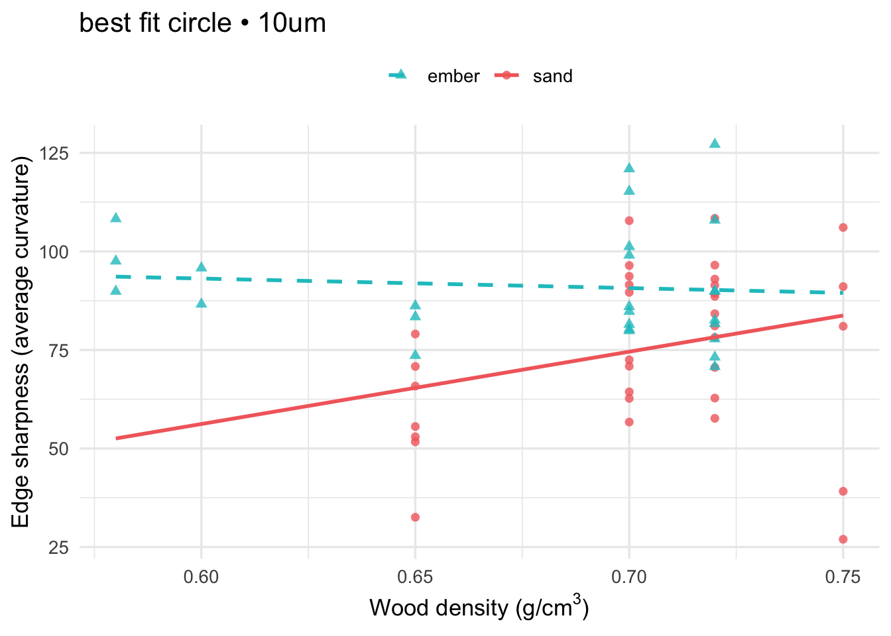
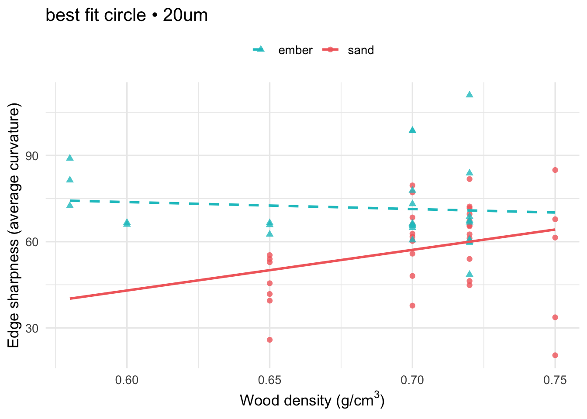
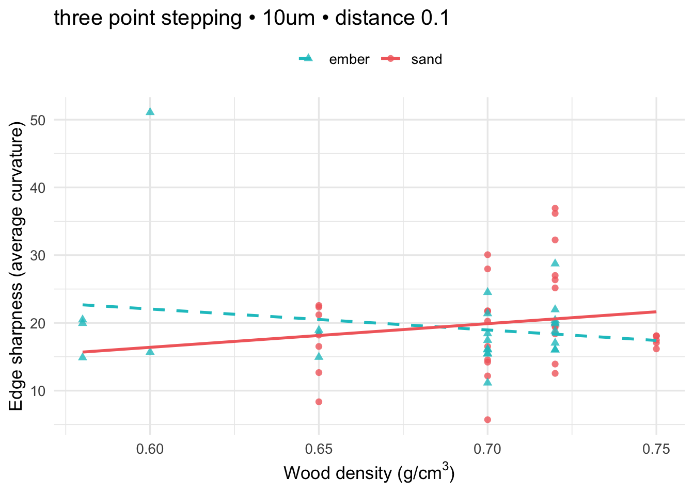
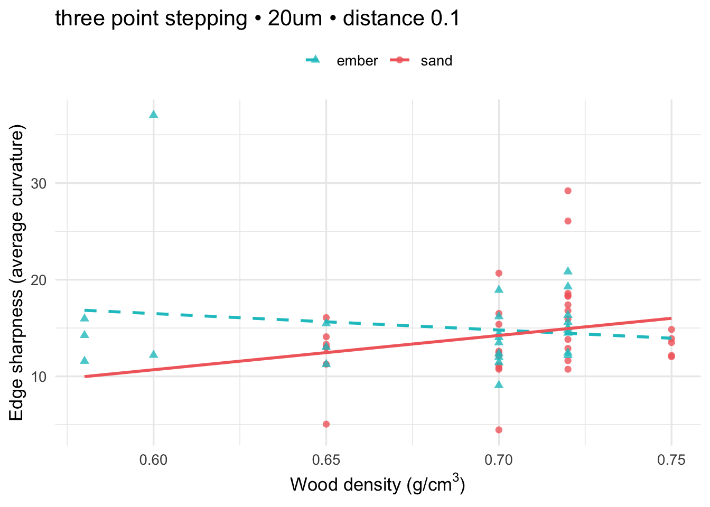
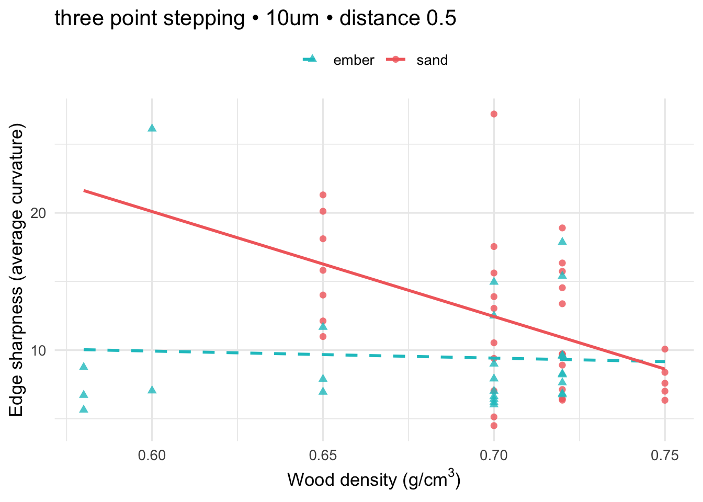
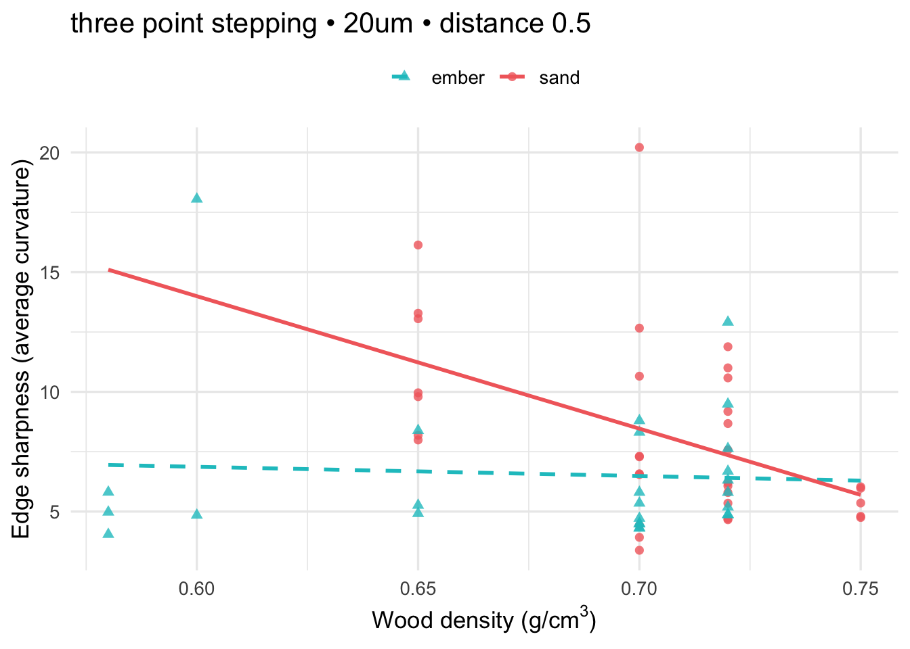
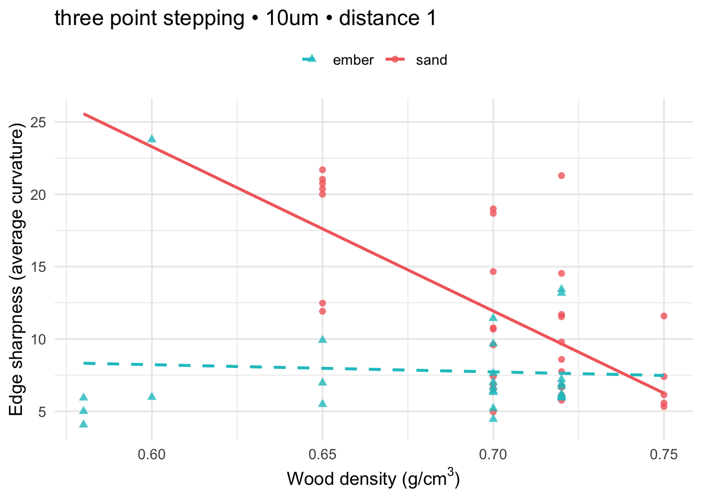
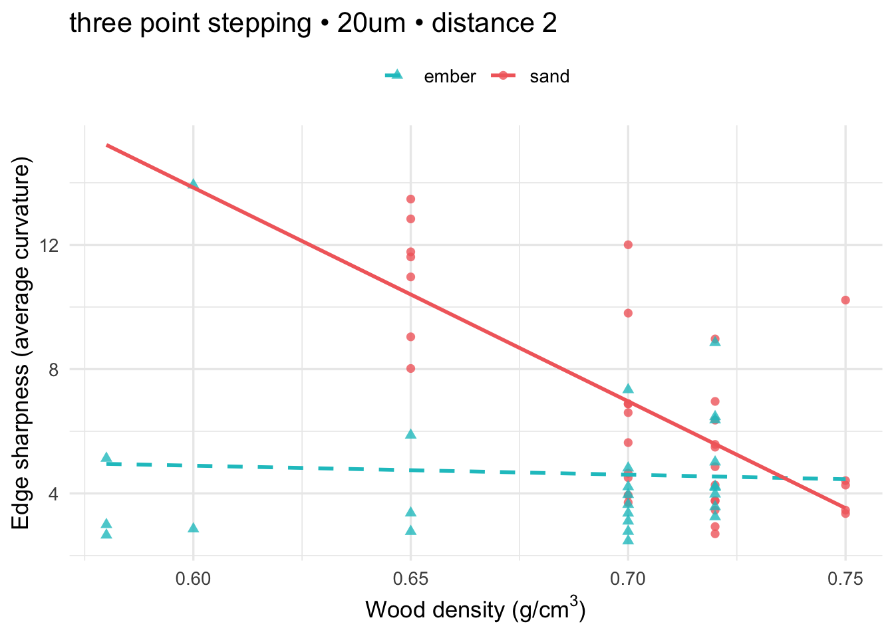
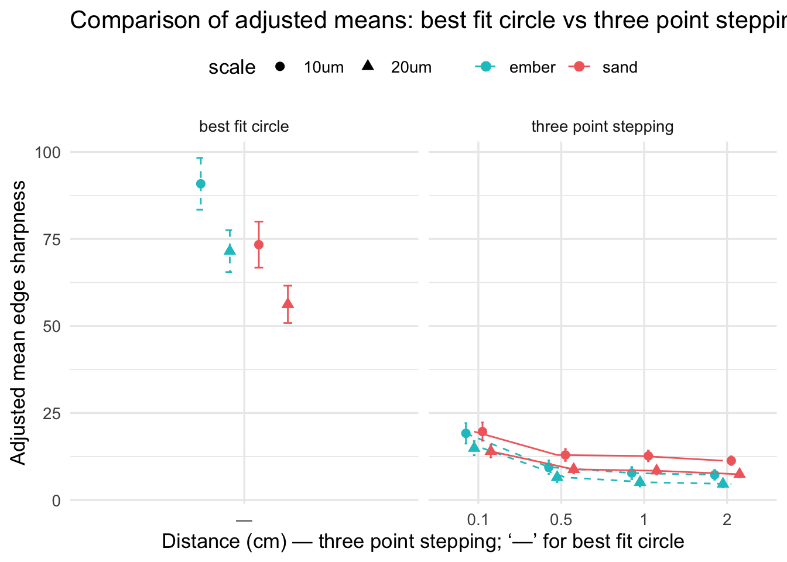

library(tidyverse)
library(car)
library(sandwich)
library(lmtest)
library(emmeans)
library(broom)
library(tibble)
data_path <- "wide-to-long_with_wood_density.csv"
dat <- readr::read_csv(data_path, show_col_types = FALSE)
dat <- dat %>%
mutate(
method = dplyr::recode(tolower(method),
"old method" = "three point stepping",
"new method" = "best fit circle"
),
scale = tolower(as.character(scale)),
treatment = as.character(treatment),
heating_condition = tolower(as.character(heating_condition)),
distance = suppressWarnings(as.numeric(distance))
)
# Exclude unheated
dat_filt <- dat %>% filter(!treatment %in% c("Unheated", "unheated"))Silcrete Edge Sharpness: Heating Technique vs. Wood Density
1 Overview
Here we analyze how heating technique (ember vs sand) and wood fuel density affect silcrete flake edge sharpness (average curvature).
- Exclude unheated observations.
- Analyze best fit circle method (10 µm and 20 µm).
- Analyze three point stepping method at distances 0.1, 0.5, 1.0, 2.0 cm and scales 10 µm, 20 µm.
- Fit OLS with interaction:
average_curvature ~ wood_density * heating_condition. - Use Type II ANOVA and HC3 robust SE for inference.
- Report adjusted means (EMMs) for heating condition at mean wood density.
1.1 Packages & Data
1.2 Helper functions
fit_int_model <- function(df) {
df <- df %>% drop_na(average_curvature, wood_density, heating_condition)
if (nrow(df) < 5) return(NULL)
m <- lm(average_curvature ~ wood_density * heating_condition, data = df)
a2 <- tryCatch(
car::Anova(m, type = 2, white.adjust = "hc3"),
error = function(e) car::Anova(m, type = 2)
)
list(model = m, anova2 = a2)
}
tidy_anova <- function(a2) {
at <- as.data.frame(a2)
at$term <- rownames(at)
rownames(at) <- NULL
at %>% select(term, everything())
}
emmeans_by_heat <- function(mdl, df) {
mean_wd <- mean(df$wood_density, na.rm = TRUE)
em <- emmeans::emmeans(mdl, specs = ~ heating_condition,
at = list(wood_density = mean_wd),
type = "response")
as.data.frame(summary(em)) %>%
rename(pred_mean = emmean, ci_low = lower.CL, ci_high = upper.CL)
}
# Plot in requested style
plot_interaction_custom <- function(mdl, df, title) {
rng <- range(df$wood_density, na.rm = TRUE)
grid <- expand.grid(
wood_density = seq(rng[1], rng[2], length.out = 200),
heating_condition = sort(unique(df$heating_condition))
)
pr <- as.data.frame(predict(mdl, newdata = grid, se.fit = TRUE))
grid$fit <- pr$fit
cols <- c("sand" = "#F26B6B", "ember" = "#18C3C8") # coral, cyan
shapes <- c("sand" = 16, "ember" = 17) # circle, triangle
ltys <- c("sand" = 1, "ember" = 2) # solid, dashed
ggplot(df, aes(x = wood_density, y = average_curvature, colour = heating_condition)) +
geom_point(aes(shape = heating_condition), size = 2, alpha = 0.8) +
geom_smooth(data = grid,
aes(x = wood_density, y = fit, linetype = heating_condition),
se = FALSE, method = "lm", formula = y ~ x) +
scale_colour_manual(values = cols, name = NULL) +
scale_shape_manual(values = shapes, name = NULL) +
scale_linetype_manual(values = ltys, name = NULL) +
labs(title = title,
x = expression(paste("Wood density (g/", cm^3, ")")),
y = "Edge sharpness (average curvature)") +
theme_minimal(base_size = 13) +
theme(legend.position = "top")
}2 best fit circle
new10 <- dat_filt %>% filter(method == "best fit circle", scale == "10um")
new20 <- dat_filt %>% filter(method == "best fit circle", scale == "20um")
# 10 µm
cat("## best fit circle • 10um\n")## best fit circle • 10umres_n10 <- fit_int_model(new10)
if (!is.null(res_n10)) {
print(tidy_anova(res_n10$anova2))
print(lmtest::coeftest(res_n10$model, vcov = sandwich::vcovHC(res_n10$model, type = "HC3")))
print(emmeans_by_heat(res_n10$model, new10))
print(plot_interaction_custom(res_n10$model, new10, "best fit circle • 10um"))
} term Df F Pr(>F)
1 wood_density 1 4.647153e-04 0.9828777584
2 heating_condition 1 1.547052e+01 0.0002333676
3 wood_density:heating_condition 1 2.022298e+00 0.1605505277
4 Residuals 56 NA NA
t test of coefficients:
Estimate Std. Error t value Pr(>|t|)
(Intercept) 107.619 33.382 3.2239 0.002111 **
wood_density -24.182 50.882 -0.4753 0.636448
heating_conditionsand -161.509 100.680 -1.6042 0.114299
wood_density:heating_conditionsand 207.677 146.038 1.4221 0.160551
---
Signif. codes: 0 '***' 0.001 '**' 0.01 '*' 0.05 '.' 0.1 ' ' 1
heating_condition pred_mean SE df ci_low ci_high
ember 90.84878 3.713435 56 83.40987 98.28768
sand 73.36427 3.296678 56 66.76023 79.96831
Confidence level used: 0.95 
bestfitcircle_10_inter_plot<-plot_interaction_custom(res_n10$model, new10, "best fit circle • 10um")
# 20 µm
cat("## best fit circle • 20um\n")## best fit circle • 20umres_n20 <- fit_int_model(new20)
if (!is.null(res_n20)) {
print(tidy_anova(res_n20$anova2))
print(lmtest::coeftest(res_n20$model, vcov = sandwich::vcovHC(res_n20$model, type = "HC3")))
print(emmeans_by_heat(res_n20$model, new20))
print(plot_interaction_custom(res_n20$model, new20, "best fit circle • 20um"))
} term Df F Pr(>F)
1 wood_density 1 0.05403144 8.170386e-01
2 heating_condition 1 18.06085444 8.171912e-05
3 wood_density:heating_condition 1 2.12199899 1.507814e-01
4 Residuals 56 NA NA
t test of coefficients:
Estimate Std. Error t value Pr(>|t|)
(Intercept) 88.322 34.465 2.5626 0.0131 *
wood_density -24.241 52.312 -0.4634 0.6449
heating_conditionsand -130.212 77.994 -1.6695 0.1006
wood_density:heating_conditionsand 165.728 113.769 1.4567 0.1508
---
Signif. codes: 0 '***' 0.001 '**' 0.01 '*' 0.05 '.' 0.1 ' ' 1
heating_condition pred_mean SE df ci_low ci_high
ember 71.51071 3.006158 56 65.48865 77.53276
sand 56.23132 2.668778 56 50.88512 61.57753
Confidence level used: 0.95 
bestfitcircle_20_inter_plot<-plot_interaction_custom(res_n20$model, new20, "best fit circle • 20um")3 three point stepping (all distances & scales)
old_combos <- expand.grid(
scale = c("10um","20um"),
distance = c(0.1, 0.5, 1.0, 2.0),
stringsAsFactors = FALSE
)
adj_means_all <- list()
for (i in seq_len(nrow(old_combos))) {
sc <- old_combos$scale[i]
di <- old_combos$distance[i]
dfi <- dat_filt %>%
filter(method == "three point stepping", scale == sc, distance == di) %>%
drop_na(average_curvature, wood_density, heating_condition)
ttl <- paste0("three point stepping • ", sc, " • distance ", di)
cat("## ", ttl, "\n", sep = "")
res <- fit_int_model(dfi)
if (!is.null(res)) {
print(tidy_anova(res$anova2))
print(lmtest::coeftest(res$model, vcov = sandwich::vcovHC(res$model, type = "HC3")))
print(emmeans_by_heat(res$model, dfi))
print(plot_interaction_custom(res$model, dfi, ttl))
em <- emmeans_by_heat(res$model, dfi) %>%
mutate(method = "three point stepping", scale = sc, distance = di)
adj_means_all[[length(adj_means_all)+1]] <- em
} else {
message("Skipped (insufficient rows): ", ttl)
}
}## three point stepping • 10um • distance 0.1
term Df F Pr(>F)
1 wood_density 1 0.3349822 0.5650607
2 heating_condition 1 0.5754509 0.4512820
3 wood_density:heating_condition 1 1.3536978 0.2495663
4 Residuals 56 NA NA
t test of coefficients:
Estimate Std. Error t value Pr(>|t|)
(Intercept) 40.602 33.406 1.2154 0.2293
wood_density -30.921 47.300 -0.6537 0.5160
heating_conditionsand -45.183 39.890 -1.1327 0.2622
wood_density:heating_conditionsand 65.881 56.624 1.1635 0.2496
heating_condition pred_mean SE df ci_low ci_high
ember 19.15804 1.469189 56 16.21490 22.10118
sand 19.66387 1.304303 56 17.05104 22.27670
Confidence level used: 0.95 
## three point stepping • 20um • distance 0.1
term Df F Pr(>F)
1 wood_density 1 1.4393550 0.2352950
2 heating_condition 1 0.1285712 0.7212664
3 wood_density:heating_condition 1 1.7874141 0.1866475
4 Residuals 56 NA NA
t test of coefficients:
Estimate Std. Error t value Pr(>|t|)
(Intercept) 26.693 23.596 1.1312 0.2628
wood_density -16.997 33.423 -0.5086 0.6131
heating_conditionsand -37.308 27.635 -1.3500 0.1824
wood_density:heating_conditionsand 52.491 39.262 1.3369 0.1866
heating_condition pred_mean SE df ci_low ci_high
ember 14.90495 1.0078011 56 12.88609 16.92382
sand 13.99974 0.8946961 56 12.20745 15.79204
Confidence level used: 0.95 
## three point stepping • 10um • distance 0.5
term Df F Pr(>F)
1 wood_density 1 11.112779 0.00152469
2 heating_condition 1 5.300647 0.02505772
3 wood_density:heating_condition 1 4.460068 0.03917043
4 Residuals 56 NA NA
t test of coefficients:
Estimate Std. Error t value Pr(>|t|)
(Intercept) 12.9925 19.4049 0.6696 0.50590
wood_density -5.1025 27.6737 -0.1844 0.85438
heating_conditionsand 52.9898 23.8542 2.2214 0.03038 *
wood_density:heating_conditionsand -71.3754 33.7970 -2.1119 0.03917 *
---
Signif. codes: 0 '***' 0.001 '**' 0.01 '*' 0.05 '.' 0.1 ' ' 1
heating_condition pred_mean SE df ci_low ci_high
ember 9.45394 0.9628986 56 7.525022 11.38286
sand 12.94484 0.8548330 56 11.232406 14.65728
Confidence level used: 0.95 
## three point stepping • 20um • distance 0.5
term Df F Pr(>F)
1 wood_density 1 10.562253 0.001955065
2 heating_condition 1 4.019284 0.049826278
3 wood_density:heating_condition 1 4.745481 0.033601157
4 Residuals 56 NA NA
t test of coefficients:
Estimate Std. Error t value Pr(>|t|)
(Intercept) 9.1756 13.2823 0.6908 0.49254
wood_density -3.8455 18.9277 -0.2032 0.83974
heating_conditionsand 38.0283 16.7461 2.2709 0.02702 *
wood_density:heating_conditionsand -51.5001 23.6411 -2.1784 0.03360 *
---
Signif. codes: 0 '***' 0.001 '**' 0.01 '*' 0.05 '.' 0.1 ' ' 1
heating_condition pred_mean SE df ci_low ci_high
ember 6.508796 0.6696125 56 5.167401 7.850191
sand 8.821821 0.5944622 56 7.630970 10.012672
Confidence level used: 0.95 
## three point stepping • 10um • distance 1
term Df F Pr(>F)
1 wood_density 1 17.04295 0.0001227695
2 heating_condition 1 13.13417 0.0006263356
3 wood_density:heating_condition 1 10.04733 0.0024734797
4 Residuals 56 NA NA
t test of coefficients:
Estimate Std. Error t value Pr(>|t|)
(Intercept) 11.197 18.598 0.6021 0.549559
wood_density -4.961 26.413 -0.1878 0.851692
heating_conditionsand 80.251 24.219 3.3136 0.001619 **
wood_density:heating_conditionsand -108.633 34.272 -3.1698 0.002473 **
---
Signif. codes: 0 '***' 0.001 '**' 0.01 '*' 0.05 '.' 0.1 ' ' 1
heating_condition pred_mean SE df ci_low ci_high
ember 7.756942 0.8677524 56 6.018626 9.495259
sand 12.670586 0.7703650 56 11.127359 14.213812
Confidence level used: 0.95 
## three point stepping • 20um • distance 1
term Df F Pr(>F)
1 wood_density 1 17.16504 0.0001168786
2 heating_condition 1 11.08927 0.0015408750
3 wood_density:heating_condition 1 10.33308 0.0021701150
4 Residuals 56 NA NA
t test of coefficients:
Estimate Std. Error t value Pr(>|t|)
(Intercept) 7.7045 12.8843 0.5980 0.552267
wood_density -3.7671 18.2726 -0.2062 0.837411
heating_conditionsand 56.5468 16.9221 3.3416 0.001489 **
wood_density:heating_conditionsand -76.7441 23.8743 -3.2145 0.002170 **
---
Signif. codes: 0 '***' 0.001 '**' 0.01 '*' 0.05 '.' 0.1 ' ' 1
heating_condition pred_mean SE df ci_low ci_high
ember 5.091966 0.6030437 56 3.883924 6.300008
sand 8.416731 0.5353644 56 7.344268 9.489195
Confidence level used: 0.95 ## three point stepping • 10um • distance 2
term Df F Pr(>F)
1 wood_density 1 12.969440 0.0006725616
2 heating_condition 1 16.194712 0.0001732428
3 wood_density:heating_condition 1 9.810223 0.0027588652
4 Residuals 56 NA NA
t test of coefficients:
Estimate Std. Error t value Pr(>|t|)
(Intercept) 8.6055 15.1404 0.5684 0.572050
wood_density -1.9439 21.5251 -0.0903 0.928364
heating_conditionsand 67.0603 20.3694 3.2922 0.001725 **
wood_density:heating_conditionsand -90.8620 29.0097 -3.1321 0.002759 **
---
Signif. codes: 0 '***' 0.001 '**' 0.01 '*' 0.05 '.' 0.1 ' ' 1
heating_condition pred_mean SE df ci_low ci_high
ember 7.257365 0.7029881 56 5.849111 8.665619
sand 11.304873 0.6240921 56 10.054666 12.555080
Confidence level used: 0.95 ## three point stepping • 20um • distance 2
term Df F Pr(>F)
1 wood_density 1 14.05092 0.0004230773
2 heating_condition 1 15.68165 0.0002138719
3 wood_density:heating_condition 1 10.09515 0.0024197629
4 Residuals 56 NA NA
t test of coefficients:
Estimate Std. Error t value Pr(>|t|)
(Intercept) 6.6357 10.7544 0.6170 0.539723
wood_density -2.9057 15.2867 -0.1901 0.849932
heating_conditionsand 48.4792 14.5503 3.3318 0.001533 **
wood_density:heating_conditionsand -65.8804 20.7348 -3.1773 0.002420 **
---
Signif. codes: 0 '***' 0.001 '**' 0.01 '*' 0.05 '.' 0.1 ' ' 1
heating_condition pred_mean SE df ci_low ci_high
ember 4.620542 0.4972681 56 3.624394 5.616690
sand 7.411683 0.4414600 56 6.527333 8.296034
Confidence level used: 0.95 
# Bind adjusted means
adj_means_old <- if (length(adj_means_all) > 0) {
dplyr::bind_rows(adj_means_all) %>% mutate(distance = as.character(distance))
} else {
tibble::tibble(
heating_condition = character(),
pred_mean = double(),
ci_low = double(),
ci_high = double(),
method = character(),
scale = character(),
distance = character()
)
}3.1 Summary figure (OLD only)
three_point_stepping_summary_plot<-if (nrow(adj_means_old) > 0) {
ggplot(adj_means_old,
aes(x = factor(distance),
y = pred_mean,
group = interaction(heating_condition, scale),
colour = heating_condition, shape = scale, linetype = heating_condition)) +
geom_point(position = position_dodge(width = 0.3), size = 2.2) +
geom_line(position = position_dodge(width = 0.3)) +
geom_errorbar(aes(ymin = ci_low, ymax = ci_high),
width = 0.08, position = position_dodge(width = 0.3)) +
scale_colour_manual(values = c("sand"="#F26B6B","ember"="#18C3C8"), name = NULL) +
scale_linetype_manual(values = c("sand"=1,"ember"=2), name = NULL) +
labs(x = "Distance (cm)", y = "Adjusted mean edge sharpness",
title = "Adjusted means (±95% CI) by heating condition — three point stepping") +
theme_minimal(base_size = 13) +
theme(legend.position = "top")
}4 Combined comparison: best fit circle vs three point stepping
# Adjusted means for best fit circle
adj_means_new <- bind_rows(
if (!is.null(res_n10)) emmeans_by_heat(res_n10$model, new10) %>% mutate(method="best fit circle", scale="10um", distance="—"),
if (!is.null(res_n20)) emmeans_by_heat(res_n20$model, new20) %>% mutate(method="best fit circle", scale="20um", distance="—")
)
adj_all <- bind_rows(adj_means_new, adj_means_old)
ggplot(adj_all,
aes(x = factor(distance, levels=c("—","0.1","0.5","1","2")),
y = pred_mean,
colour = heating_condition, shape = scale, linetype = heating_condition)) +
geom_point(position = position_dodge(width = 0.4), size = 2.5) +
geom_line(aes(group = interaction(heating_condition, scale, method)),
position = position_dodge(width = 0.4)) +
geom_errorbar(aes(ymin = ci_low, ymax = ci_high),
width = 0.12, position = position_dodge(width = 0.4)) +
facet_wrap(~ method, scales = "free_x") +
scale_colour_manual(values = c("sand"="#F26B6B","ember"="#18C3C8"), name = NULL) +
scale_linetype_manual(values = c("sand"=1,"ember"=2), name = NULL) +
labs(x = "Distance (cm) — three point stepping; ‘—’ for best fit circle",
y = "Adjusted mean edge sharpness",
title = "Comparison of adjusted means: best fit circle vs three point stepping (10µm & 20µm)") +
theme_minimal(base_size = 13) +
theme(legend.position = "top")
4.1 Figure caption (for manuscript)
Figure X. Comparison of adjusted mean edge sharpness (average curvature) for silcrete flakes heated under ember and sand conditions, controlling for wood density. Results are shown for the best fit circle (10 µm and 20 µm; “—”) and for the three point stepping (10 µm and 20 µm) measured at increasing distances (0.1–2.0 cm). Error bars are 95% CIs. The best fit circle consistently detects sharper edges after ember heating relative to sand, whereas the three point stepping often shows the opposite pattern, particularly at greater measurement distances. Differences in absolute values between 10 µm and 20 µm reflect scale sensitivity, but relative contrasts between heating techniques are consistent within method.
5 Exports (Tables & Figure)
# Create an 'exports' directory next to this file
exports_dir <- file.path(getwd(), "step 3-exports")
if (!dir.exists(exports_dir)) dir.create(exports_dir, recursive = TRUE)
suppressPackageStartupMessages({
library(dplyr)
library(tidyr)
library(gt)
library(stringr)
library(readr)
library(ggplot2)
})5.1 Table 1. Data sample summary
This table summarizes the analytical sample used in this notebook by method, scale, distance, and heating condition (saved to file).
5.2 Figures (saved to file)
This recreates the papers plots and exports them to high-resolution PNG and PDF suitable for publication.
6 General Summary
Across all ANOVA models, we observe a consistent pattern:
- Omnibus ANOVA tests indicate significant overall differences in edge sharpness across heating conditions, even after controlling for wood density and using robust standard errors.
- Coefficient-level contrasts vs. baseline are not always significant, reflecting that robust SEs widen uncertainty and that differences may lie between non-baseline conditions.
- Pairwise post-hoc tests (emmeans) clarify which specific heating conditions differ. These contrasts provide the most reliable picture of group-level differences.
Takeaway. The results suggest that heating technique has a detectable overall effect on edge sharpness, but the specific contrasts driving this effect are subtle. Interpretation should emphasize the omnibus ANOVA findings, supported by pairwise comparisons rather than sole reliance on baseline contrasts.